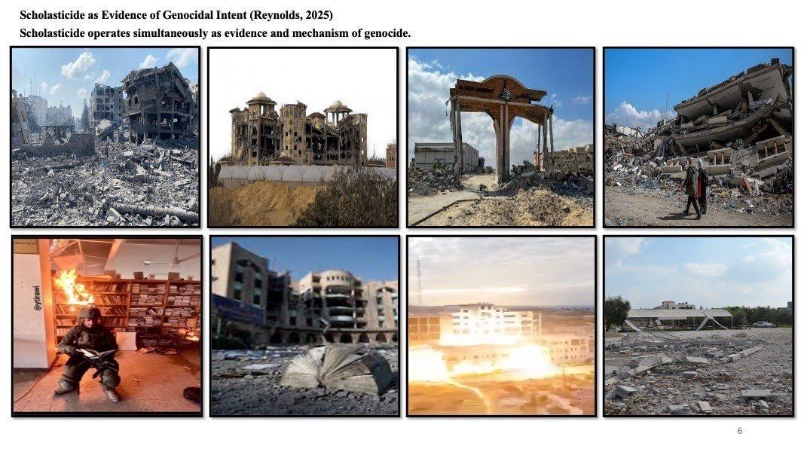
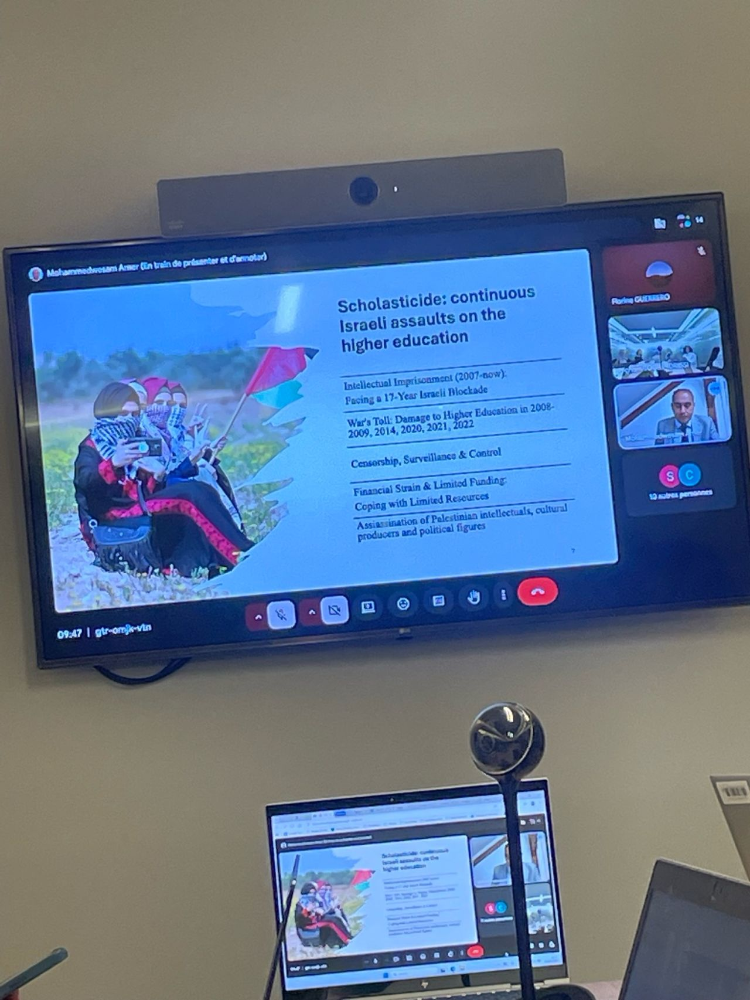

Institutional Engagement
European Parliament Workshop Explores Support for Higher Education in Gaza, the West Bank, and Lebanon
Dr. Wesam Amer participated in a workshop at the European Parliament dedicated to supporting education in Gaza, the West Bank, and Lebanon. Bringing together policymakers, academics, and civil society representatives, the event focused on practical strategies to safeguard academic continuity, expand educational opportunities, and strengthen higher education institutions facing unprecedented challenges.
Dr. Wesam Amer participated in a workshop at the European Parliament on 5 May 2026, contributing to discussions on supporting education and higher education systems in Gaza, the West Bank, and Lebanon. The event brought together Members of the European Parliament, academics, and representatives of civil society to examine coordinated responses to the growing challenges confronting students, scholars, and educational institutions across the region.
The workshop focused on identifying concrete measures to sustain academic life under conditions of disruption and crisis. Participants explored ways to protect educational continuity, expand scholarship opportunities for displaced students, strengthen cooperation with Palestinian institutions, and reinforce the role of higher education in long-term recovery and regional stability.
During the discussions, Dr. Amer contributed perspectives drawn from his research and professional engagement with higher education in conflict-affected settings. The exchanges emphasized the importance of ensuring that universities remain operational spaces for learning, research, and knowledge production, even in the face of severe institutional challenges.
A key theme emerging from the workshop was the need to move beyond expressions of concern toward structured policy action. Participants stressed that safeguarding education requires sustained commitment, international partnerships, and practical mechanisms capable of supporting both institutions and individuals affected by conflict and displacement.
The event also highlighted the critical role that European institutions can play in mobilizing resources, strengthening academic cooperation, and supporting pathways for students and researchers whose educational opportunities have been disrupted. Participants underscored that protecting the right to education is not only a humanitarian priority but also an essential component of long-term social and economic recovery.
Dr. Amer's participation ensured that discussions benefited from firsthand academic perspectives on the challenges facing higher education in Palestine. The workshop concluded with a shared commitment to advancing collaborative initiatives that can help sustain academic communities and preserve access to education across the region.


